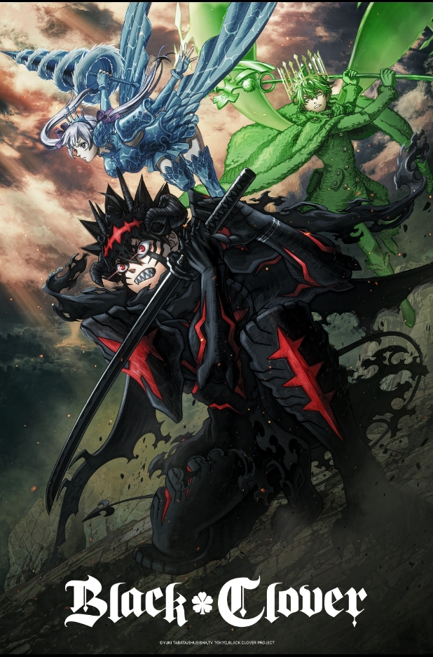

Anime
Black Clover 2nd Season
(2026) is the highly anticipated seasonal continuation of the hit dark fantasy anime, returning after a five-year hiatus to adapt the definitive conclusion of Yūki Tabata's manga series.

Anime
(2026) is the highly anticipated seasonal continuation of the hit dark fantasy anime, returning after a five-year hiatus to adapt the definitive conclusion of Yūki Tabata's manga series.

Anime
The official manga sequel and part two of the Boruto saga, written by Masashi Kishimoto and illustrated by Mikio Ikemoto.

Anime
2022 anime based on the manga series by Tatsuya Endo. It is produced by Wit Studio and CloverWorks, and premiered in Japan on April 9, 2022.
Picking up exactly where the original 170-episode run ended, the story plunges into the high-stakes Spade Kingdom Raid Arc as the Magic Knights launch a desperate, coordinated assault against the tyrannical Dark Triad to rescue the abducted Captains Yami Sukehiro and William Vengeance. With the villains attempting to open the underworld gates via the catastrophic Tree of Qliphoth ritual, Asta must push past his physical limits to master his powerful "Devil Union" form alongside his anti-magic devil, Liebe. Following the grueling fallout of the devil convergence, the conflict rapidly escalates into a final, world-ending sprint against Lucius Zogratis—the most formidable threat the Magic Knights have ever faced—propelling Asta and Yuno into an ultimate showdown to protect humanity and fulfill their shared dream of becoming the Wizard King.
The narrative begins three years after Eida’s reality-warping "Omnipotence" jutsu rewrote the memories of the entire world, reversing the lives of Boruto and Kawaki. The world now believes Kawaki is the true biological son of the Seventh Hokage, while Boruto is branded a treacherous rogue who murdered Naruto—who, alongside Hinata, remains safely sealed away in Kawaki's pocket dimension. Having spent his exile training in secret with Sasuke Uchiha (who eventually sacrifices himself and gets trapped in a divine tree), a remarkably powerful Boruto suddenly returns to the Hidden Leaf Village to defend it from an apocalyptic invasion led by Code and his army of Rinnegan-wielding Claw Grimes. Showing off devastating new abilities like Rasengan Uzuhiko and the Flying Raijin Technique, Boruto temporarily drives Code back, only to face a terrifying new threat: the Claw Grimes have evolved into self-aware, god-like Divine Trees (Shinju) modeled after the people they absorbed, including a clone of Sasuke named Hidari. As allies like Sarada Uchiha and Sumire Kakei secretly work to expose Eida's lie, and Himawari Uzumaki awakens the Nine-Tails' chakra to fight back, Boruto must walk a razor-thin line—evading the obsessed Kawaki and the village forces while strategically orchestrating a way to save his master, rescue his parents, and neutralize the ultimate threat of the Shinju.
To prevent a major conflict between the nations of Westalis and Ostania under Operation Strix, master spy Twilight adopts the persona of psychiatrist Loid Forger and builds a mock family to get close to the reclusive politician Donovan Desmond. He adopts Anya, a young telepath who secretly knows his real identity, and marries Yor Briar, a quiet city hall worker who is actually a lethal hitman known as the Thorn Princess. As Anya struggles to earn academic stars at the elite Eden Academy so Loid can approach his target, and as they later adopt a future-predicting dog named Bond, the trio must constantly hide their true professions from one another while slowly developing genuine, heartfelt affection as a real family.